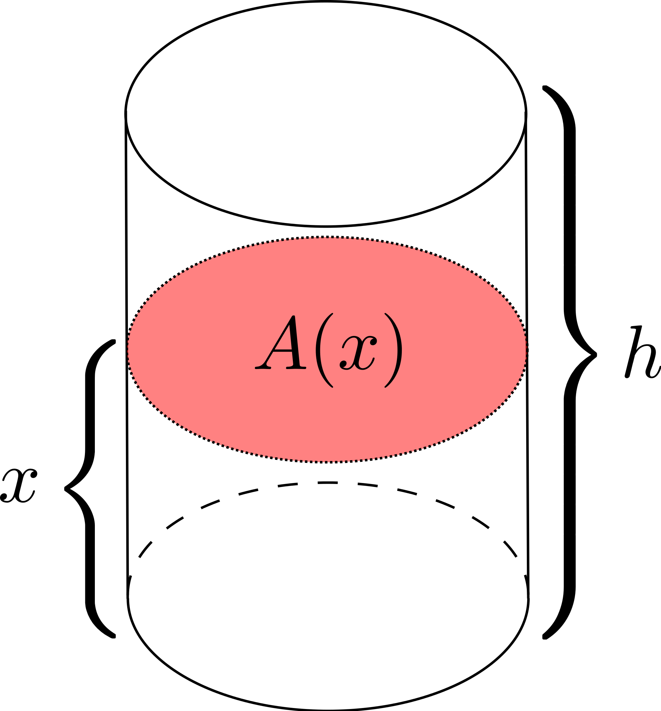

Introduction. The purpose of this essay is to describe my three favorite Hypertext Markup Language (HTML) tags.
<iframe>. The inline frame tag is my #1 favorite HTML tag. This tag embeds another document within the current HTML document. It provides a flexible, yet straightforward, method for embedding. Tag Implementation Reference: Maps Embed API
<abbr>. The abbreviation tag is my #2 favorite HTML tag. This tag allows users to hover over an abbreviation or acronym to view the expanded version. This is useful for portraying information while keeping the display visually appealing. Tag Implementation Reference: HTML abbr Tag SVSU was founded in 1963.
<img>. The image tag is my #3 favorite HTML tag. This tag defines an image in an HTML page. Images customize webpages and improve the overall aesthetic. They can also be used to depict information, such as mathematical figures. Tag Implementation Reference: HTML img Tag 
Conclusion. The inline frame tag, abbreviation tag, and image tag all contribute to the structure of HTML documents. Each tag has its own purpose and method of displaying content, which adds to the options developers have when implmenting HTML.